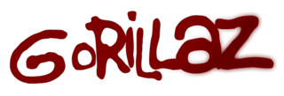
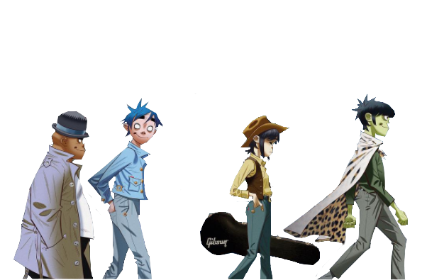
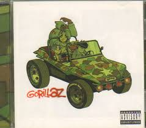

Gorillaz es una banda virtual británica creada en 1998 por Damon Albarn y Jamie Hewlett.
La banda está compuesta por cuatro miembros ficticios: 2-D,Noodle, Murdoc Niccals y Russel Hobbs
La mayoría de sus canciones junto con todo su universo ficticio, se presentan a través de vídeos
musicales animados de animación tradicional y animación por computadora, entrevistas y pequeños cortos animados.
En la realidad, Albarn es el único miembro permanente de la banda. El productor y ejecutivo Remi Kabaka Jr.
empezaría a colaborar con el grupo en 2016 después de proveer por varios años la voz de Russel Hobbs
y sería nombrado miembro oficial junto a Albarn y Hewlett en 2019 en el documental de Gorillaz, Gorillaz: Reject False Icons.
Miembros reales
- Jamie Hewlett: ilustraciones, visuales, efectos especiales, dirección de los videos musicales (1998–presente)
- Remi Kabaka Jr.: producción (2016–presente)
Damon Albarn: voces, teclados, piano, guitarras, bajo, batería melódica (1998–presente)
Miembros Virtuales
- Murdoc Niccals: bajo, máquina de ritmos (1998-2018, 2019-presente)
- 2-D:voces, teclados, melódica (1998-presente)
- Russel Hobbs batería, percusión (1998-2006, 2012-presente)
- Noodle:guitarras, teclados, voces (1998-2006, 2012-presente)

Como surgio el grupo?
Después de diseñar los personajes y su historia, lanzaron su primer sencillo,
“Clint Eastwood”,en 2001, que se convirtió en un éxito mundial. Poco después se lanzó su álbum debut Gorillaz
(2001).Fusionó géneros como el hip-hop, el dub, el rock alternativo y la electrónica, lo que supuso una creación
muy original para la época.
algunas canciones notables
- Clint Eastwood: Una mezcla de rap y reggae con un ritmo pegadizo. La letra habla de la liberación espiritual, pero también suena muy relajada

- Feelgood Inc: :Probablemente su canción más famosa. Es una crítica a la falsa felicidad que venden los medios de comunicación y las corporaciones. La risa de fondo es muy característica

- On Melancholy Hill Una canción melancólica y nostálgica con una melodía suave y sintética. DARE: más bailable y funky, con la voz principal de Noodle (interpretada por Rosie Wilson)